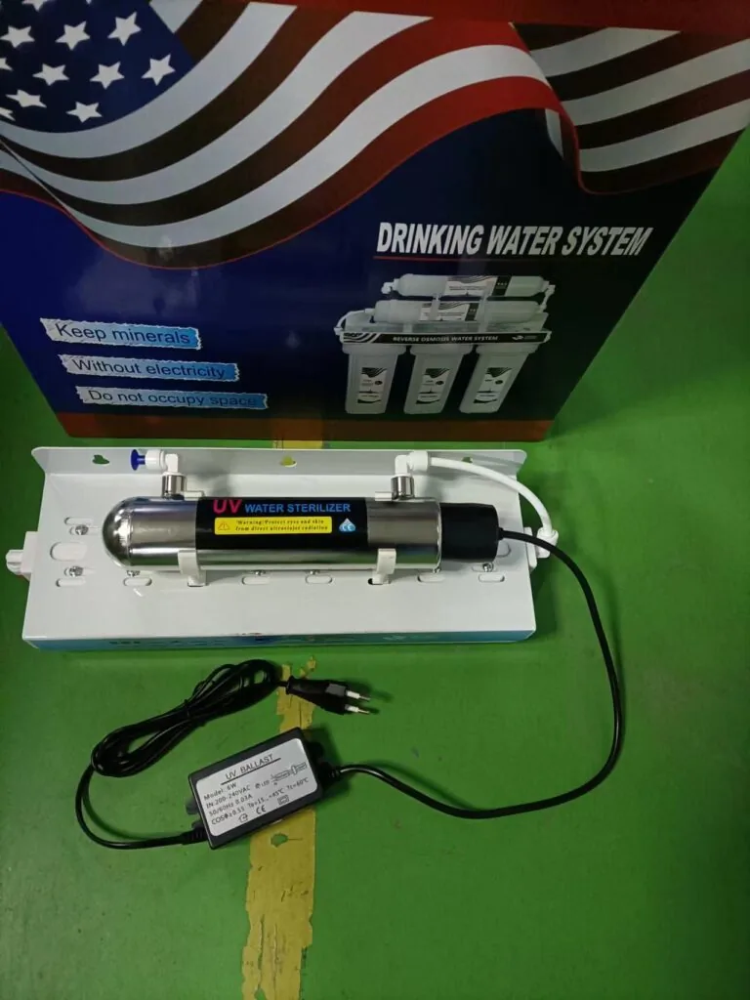

Alkaline Water Purifier System
Alkaline Water Purifier System — Type: Alkaline; pH range: 8.5 - 9.5.
Send Inquiry
Maifan Stone Mineralizing Purifier is an inline water filter cartridge for drinking-water systems that need a specific media function and compact installation position. Confirm connector size, media purpose, compatible tubing, expected service life, label artwork and package plan.
Maifan Stone Mineralizing Purifier should be matched by media function, connector size, tubing compatibility, installation position and expected service life. Inline replacement filter cartridge buyers usually need clear labeling, retail box options and compatibility notes for purifier or dispenser programs.
For Maifan Stone Mineralizing Purifier, specialty cartridge pages need clear functional boundaries. Describe where the cartridge is installed, what media it uses, how it supports taste or system protection, and what buyers must confirm for compatibility.
| Mineral | Maifan Stone |
|---|---|
| Stages | 5-Stage |
Alkaline Water Purifier System — Type: Alkaline; pH range: 8.5 - 9.5.
Send Inquiry
Three Stage Plus UV Water Purifier — Sterilization: UV-C.
Send InquirySend quantity, target market, configuration notes and packaging requirements for Maifan Stone Mineralizing Purifier. Yuchen Water will confirm matching options, accessories and export details before pricing.